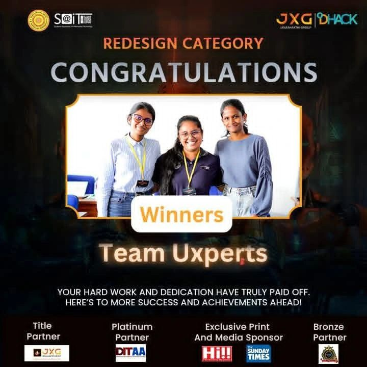
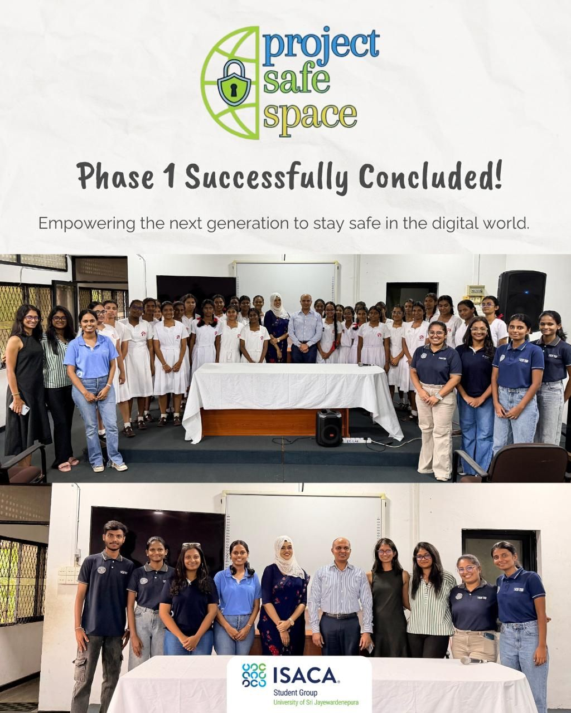
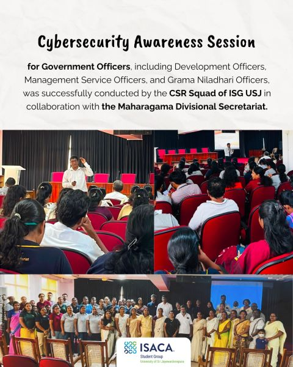
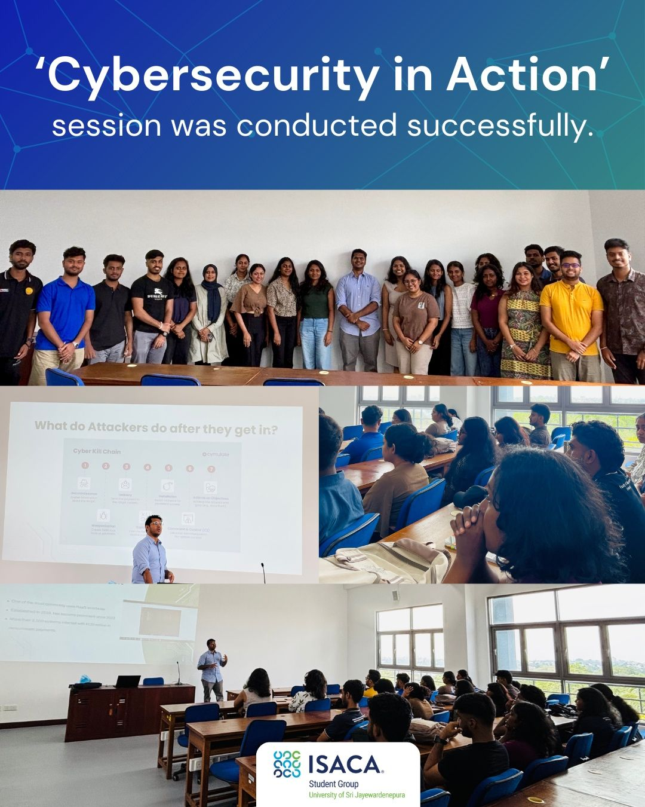
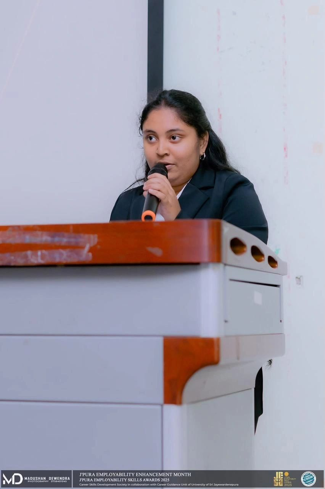
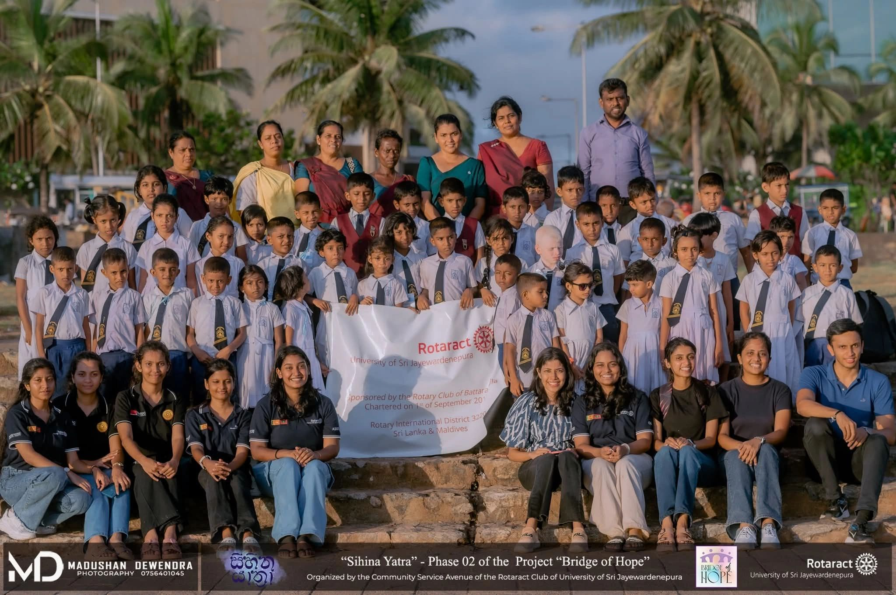

Competed as part of Team Uxperts at DHack'25, a national-level designathon organized by S@IT, USJP. Won the Redesign Category, applying UI/UX and design-thinking skills to a real-world design challenge.

Recognized as Member of the Month by the ISACA Student Group (USJP) for contributions to Project SafeSpace, a CSR initiative empowering the next generation to stay safe in the digital world. Phase 1 concluded successfully.

Coordinated a Cybersecurity Awareness Session for Development Officers, Management Service Officers, and Grama Niladhari Officers, held on 27th July 2026 in collaboration with the Maharagama Divisional Secretariat. Liaised with resource person Mr. Asanka Suraweera and the Divisional Secretariat to plan and execute the session.

Took part in "Cybersecurity in Action," an ISACA Student Group session bridging theory and real-world practice, featuring facilitator Mr. Namodh E. (CISSP, OSCP) on current attack techniques and defense strategies.

Served as compere for a workshop under J'Pura Employability Enhancement Month, organized by the Career Skills Development Society (CSDS), covering CV writing, portfolio creation, and interview techniques for students' JESA journey.

Contributed to the Bridge of Hope CSR project as part of the Finance Team, supporting financial planning and coordination for the initiative.

Leading CSR initiatives within the ISACA Student Group's CSR Squad, including Project SafeSpace and a Cybersecurity Awareness Session for Government Officers held with the Maharagama Divisional Secretariat. Recognized as Member of the Month for these contributions.
Contributing to finance-related responsibilities, financial planning, and project activities. Involved in the Bridge of Hope project as part of the Finance Team.
Currently serving on the S@IT Executive Board as part of the Finance & Monetary Committee. Previously an OC Member on the Finance Crew, contributing to DHack'25 and Sparsha'25.
Participating in student and career development activities aimed at building professional skills alongside academic learning. Served as compere for a workshop under J'Pura Employability Enhancement Month (J'Pura Employability Skills Awards 2025).